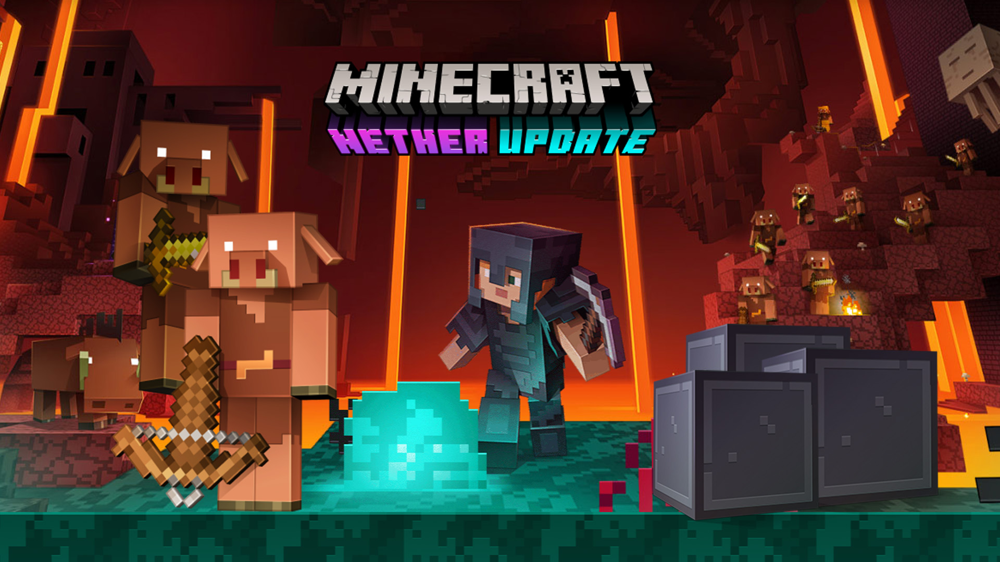
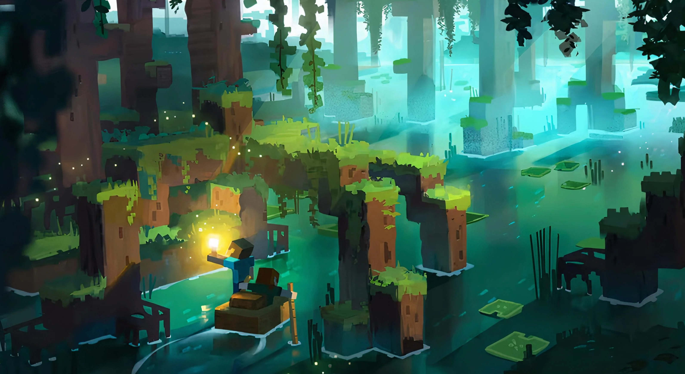

Minecraft is a sandbox video game developed by the Swedish video game developer Mojang Studios. The game was created by Markus "Notch" Persson in the Java programming language.
The first version of Minecraft was made in 6 days.
Minecraft was originally named cave game. One of Minecraft’s stranger native species is the Creeper, an electrically charged predator with a haunting mug. The game's creator didn’t actually set out to design such a monster. He was trying to create a Pig, but accidentally switched the figures for desired height and length when inputting the code. The result was the monstrosity that players know and love.
Did you know that when Ghasts scream it’s actually a sleeping cat.
Did you know that one of the Creepiest Mob in the game called Enderman speaks English backwards.
Minecraft or should I say cave game was released on 18 November 2011. Minecraft Used to have a Giant Zombie. This zombie was massive And had 50 hearts
but was "removed" because it was to OP.

Minecraft is a sandbox video game developed by the Swedish video game developer Mojang Studios. The game was created by Markus "Notch" Persson in the Java programming language. Following several early private testing versions, it was first made public in May 2009 before fully releasing in November 2011, with Jens Bergensten then taking over development. Minecraft has since been ported to several other platforms and is the best-selling video game of all time, with over 238 million copies sold and nearly 140 million monthly active users as of 2021.
In Minecraft, players explore a blocky, procedurally generated 3D world with virtually infinite terrain, and may discover and extract raw materials, craft tools and items, and build structures or earthworks. Depending on game mode, players can fight computer-controlled mobs, as well as cooperate with or compete against other players in the same world. Game modes include a survival mode, in which players must acquire resources to build the world and maintain health, and a creative mode, where players have unlimited resources and access to flight. Players can modify the game to create new gameplay mechanics, items, and assets.
Minecraft has been critically acclaimed, winning several awards and being cited as one of the greatest video games of all time. Social media, parodies, adaptations, merchandise, and the annual Minecon conventions played large roles in popularizing the game. The game has also been used in educational environments to teach chemistry, computer-aided design, and computer science. In 2014, Mojang and the Minecraft intellectual property were purchased by Microsoft for US$2.5 billion. A number of spin-off games have also been produced, such as Minecraft: Story Mode, Minecraft Dungeons, and Minecraft Earth.

Pre-classic, known otherwise as 'Cave Game' (May 10, 2009 - May 16, 2009)
Classic (May 16, 2009 - November 10, 2009)
Indev (December 23, 2009 - February 23, 2010)
Infdev (February 27, 2010 - June 30, 2010)
Alpha (June 30, 2010 - December 3, 2010)
Beta (December 20, 2010 - November 11, 2011)
Official game (November 18, 2011 - present)
1.0 - November 18, 2011
1.1 - January 12, 2012
1.2.1 - March 1, 2012
1.3.1 - August 1, 2012
1.4.2 - The Pretty Scary Update - October 25, 2012
1.5 - Redstone Update - March 13, 2013
1.6 - The Horse Update - July 1, 2013
1.7 - The Update That Changed The World - October 25, 2013
1.8 - The Bountiful Update - September 2, 2014
1.9 - The Combat Update - February 29, 2016
1.10 - The Frostburn Update - June 8, 2016
1.11 - The Exploration Update - November 14, 2016
1.12 - The World of Color Update - June 7, 2017
1.13 - The Update Aquatic - July 18, 2018
1.14 - Village and Pillage - April 23, 2019
1.15 - Buzzy Bees - December 10, 2019
1.16 - Nether Update - June 23, 2020
1.17 - Caves and Cliffs - 2021
BEDROCK Edition
1.16.210 - December 2020
1.16.201 - December 15, 2020
1.16.200 - December 8, 2020
1.16.101 - November 23, 2020
1.16.100 - November 17, 2020
1.16.50 (iOS Only) - September 22, 2020
1.16.42 (PS4 Only) - September 22, 2020
1.16.40 - September 3, 2020
1.16.21 (Switch Only) - August 20, 2020
1.16.20 - August 11, 2020
1.16.1 - June 29, 2020
1.16.0 (Nether Update) - June 24, 2020
1.15.0 (RTX Beta for Windows 10) - April 26, 2020
1.14.60 - April 15, 2020
1.14.30 - February 11, 2020
1.14.20 - January 28, 2020
1.14.1 - December 18, 2019
1.14.0.12 (PS4 Only) - December 14, 2019
1.14.0 (Buzzy Bees) - December 10, 2019
1.13.3 (iOS Only) - November 20, 2019
1.13.2 (iOS Only) - November 14, 2019
1.13.1 - November 12, 2019
1.13.0 - October 29, 2019
1.12.1 - September 2, 2019
1.12.0 - July 9, 2019
1.11.4 - May 23, 2019
1.11.3 - May 17, 2019
1.11.2- May 2, 2019
1.11.1 - April 26, 2019
1.11.0 - April 23, 2019
1.10.1 - March 27, 2019
1.10.0 (Village And Pillage Part 3) - March 19, 2019
1.9.0 (Village And Pillage Part 2) - February 5, 2019
1.8.1 - January 8, 2019
1.8.0 (Pandas and Bamboo/Village and Pillage Part 1) - December 11, 2018
1.7.1 - November 7, 2018
1.7.0 - October 16, 2018
1.6.2 - October 1, 2018
1.6.1 - September 17, 2018
1.6.0 (Phantoms) - August 28, 2018
1.5.3 - August 7, 2018
1.5.2 - July 24, 2018
1.5.1 - July 20, 2018
1.5.0 (Update Aquatic Part 2) - July 10, 2018
1.4.4 - June 7, 2018
1.4.3 - June 5, 2018
1.4.2 - May 23, 2018
1.4.1 - May 17, 2018
1.4.0 (Update Aquatic Part 1) - May 16, 2018
1.2.16 - April 20, 2018
1.2.15 - April 12, 2018
1.2.14 - April 4, 2018
1.2.13 - April 3, 2018
1.2.11 - March 8 & 9, 2018
1.2.10 - February 7, 2018
1.2.9 - January 16, 2018
1.2.8 - December 18, 2017
1.2.7 - December 14, 2017
1.2.6 - December 6, 2017
1.2.5 - October 21, 2017
1.2.3. - October 18, 2017
1.2.2 - October 4, 2017
1.2.1 - September 26, 2017
1.2.0 (Better Together Update) - September 20, 2017
Pocket Edition
1.1.7 - September 15, 2017
1.1.5 - August 3, 2017
1.1.4 - July 19, 2017
1.1.3 - July 6, 2017
1.1.2 - June 23, 2017
1.1.1 - June 20, 2017
1.1.0 (Discovery Update) - June 1, 2017
1.0.9 - May 18, 2017
1.0.8 - May 4, 2017
1.0.7 - April 20, 2017
1.0.6 - April 11, 2017
1.0.5 - March 28, 2017
1.0.4 - March 9, 2017
1.0.3 - February 8, 2017
1.0.2 - January 19, 2017
1.0.1 - January 6, 2017
1.0.0 (Ender Update) - December 19, 2016
0.16.2 - November 17, 2016
0.16.1 - November 5, 2016
0.16.0 (Boss Update) - October 21, 2016
0.15.10 - October 3, 2016
0.15.9 - September 22, 2016
0.15.8 - September 15, 2016
0.15.7 - August 31, 2016
0.15.6 - August 10, 2016
0.15.4 - July 28, 2016
0.15.3 - July 9, 2016
0.15.2 - July 7, 2016
0.15.1 - June 27, 2016
0.15.0 (Friendly Update) - June 13, 2016
0.14.3 - May 19, 2016
0.14.2 - April 26, 2016
0.14.1 - April 5, 2016
0.14.0 (Overworld Update) - February 18, 2016
0.13.2 - February 3, 2016
0.13.1 - December 16, 2015
0.13.0 - November 19, 2015
0.12.3 - October 22, 2015
0.12.2 (Nether Addition Update) - October 11, 2015
0.12.1 - September 9, 2015
0.12.0 - July 29, 2015
0.11.1 - June 4, 2015
0.11.0 (Skins and Effects Update) - June 4, 2015
0.10.5 - January 12, 2015
0.10.4 - November 24, 2014
0.10.3 - November 21, 2014
0.10.2 - November 20, 2014
0.10.1 - November 19, 2014
0.10.0 - November 18, 2014
0.9.5 - July 24, 2014
0.9.4 - July 17, 2014
0.9.3 - July 16, 2014
0.9.2 - July 15, 2014
0.9.1 - July 11, 2014
0.9.0 - July 10, 2014
0.8.1 - December 19, 2013
0.8.0 - December 12, 2013
0.7.6 - October 11, 2013
0.7.5 - September 4, 2013
0.7.4 - September 2, 2013
0.7.3 - August 15, 2013
0.7.2 - July 4, 2013
0.7.1 - June 7, 2013
0.7.0 - June 5, 2013
0.6.1 - January 31, 2013
0.6.0 - January 30, 2013
0.5.0 - November 12, 2012
0.4.0 - September 6, 2012
0.3.3 - August 9, 2012
0.3.2 - July 16, 2012
0.3.0 - April 24, 2012
0.2.1 - March 14, 2012
0.2.0 - February 11, 2012
0.1.3 - December 3, 2011
0.1.2 - October 13, 2011
0.1.1 - October 7, 2011
0.1.0 - August 16, 2011
1 Overview
2 Enchanting Procedure
3 Tool Enchantments
3.1 Efficiency
3.1.1 Speed Bonus
3.2 Fortune
3.3 Silk Touch
3.4 Unbreaking
4 Sword Enchantments
4.1 Bane of Arthropods
4.2 Fire Aspect
4.3 Knockback
4.4 Looting
4.5 Sharpness
4.6 Smite
4.7 Sweeping Edge
4.8 Unbreaking
5 Bow Enchantments
5.1 Flame
5.2 Infinity
5.3 Power
5.4 Punch
5.5 Unbreaking
6 Crossbow Enchantments
6.1 Multishot
6.2 Quick Charge
6.3 Piercing
6.4 Unbreaking
7 Armor Enchantments
7.1 Aqua Affinity (Helmet Only)
7.2 Blast Protection
7.3 Depth Strider (Boots Only)
7.4 Feather Falling (Boots Only)
7.5 Fire Protection
7.6 Frost Walker (Boots Only)
7.7 Projectile Protection
7.8 Protection
7.9 Respiration (Helmet Only)
7.10 Soul Speed (Boots Only)
7.11 Thorns
7.12 Curse of Binding
7.13 Curse of Vanishing
8 Fishing Rod Enchantments
8.1 Lure
8.2 Luck of the Sea
9 Trident Enchantments
9.1 Impaling
9.2 Riptide
9.3 Loyalty
9.4 Channeling
10 Shield Enchantments
10.1 Unbreaking
11 Carrot On A Stick Enchantments
11.1 Unbreaking
12 Other Enchantments
12.1 Mending
13 Not Yet Released Enchantments
13.1 Cleaving
14 Enchantment Weight
15 Gallery
16 Videos
Overview
An enchantment table.
When armor or a tool is enchanted, it will shine (much like a potion) with an animated purple effect, letting the holder and any nearby players see the item is enchanted. An enchanted item will display any current enchantments and their level of strength on the item (unless the enchantment is limited to level 1.[Java Edition only]) is examined in the inventory menu. Using the enchantment table method lets the player enchant armor, shovels, pickaxes, axes, swords, and bows. Much more stuff can be enchanted. However, this can only be done with an anvil and/or enchanted book. This process is very useful, If books are within a close range of an enchantment table, higher-level enchantments and more enchantments can be applied to a tool. 15 bookshelves achieve the maximum level of enchantments.
Enchanting Procedure
To enchant, you need an enchantment table, several experience points, and an item you wish to enchant. As of 1.8 The Bountiful Update, lapis lazuli is needed too. Up to 15 bookshelves may be put around the table to allow higher-level enchantments. First, set up the enchanting area. After placing the enchantment table, bookshelves should be put 1 block away from all sides of the enchantment table (leaving a block of air on all sides). Carpet or torches laid on the floor between the table and bookshelves will block the bookshelf bonus from reaching the enchantment table. Since Minecraft only checks for a maximum of 15 nearby bookshelves, there is no reason to put more bookshelves. When you finish this process, you should see white symbols floating towards the book and table. That means there are more enchantments added for you to use.
It's impossible to enchant books with Mending from an Enchanting Table.
The Enchantment table can be used by right-clicking it and placing the item to be enchanted in a slot in the enchanting interface. Lapis lazuli must also be added to a separate slot in the interface. You will then get 3 enchanting options with varying levels, needing up to 30 experience levels, and subtracting up to 3 levels. the higher the number of experience points is used for the enchantment, it's more likely the item being enchanted will get a better enchantment and more than 1 enchantment. However, this is not guaranteed. Enchanting a book will make an enchanted book with a random enchantment stored in it. Books can absorb any enchantment the enchantment table can bestow, but the book only acts as a place to hold the enchantment in your inventory before it's transferred to a real item. In order to make use of an enchanted book, it must be put in an anvil along with the item to be enchanted. The book will be consumed and the item will (if compatible) get the enchantment the book had stored. Beware that this also takes XP. In Creative, you can use the book enchanting method to enchant any item you wish, with any enchantment you wish. Some of these item-enchant combos can be completely useless (i.e.: paper with Silk Touch, a sword with Flame, etc.). You can add additional enchantments to an item by using one item to fix another of the same ilk on an anvil. Any enchantments from the sacrificed item will be applied to the fixed item if the enchant is meant to be used on that ilk of item. This process can be repeated to keep adding additional enchantments.
Efficiency
Efficiency increases the tool's working speed (speed it mines blocks at). It can be especially helpful for diamond pickaxes used to gather obsidian, which has very high durability. Efficiency is also useful for cutting down trees with an axe. It is not recommended to use Efficiency on a pickaxe if it's meant for mining Netherrack since Netherrack is very fragile against higher-tier pickaxes, to begin with. The speed increase applies to all blocks that, when mined, will drop an item. Using the wrong tool will not give as much of a speed boost. It can have a power level of up to V. However, it can have a larger level using commands/external programs. If an axe is enchanted with Efficiency, it will have an additional 5% chance of disabling a shield (Java Edition only). Note, however, that all blocks mined with an Efficiency axe/pickaxe/shovel still count as a block mined in the tool's health bar, so these tools tend to wear out fast.
Speed Bonus
Fortune
Fortune is a unique enchantment that gives the enchanted tool's wielder a chance of getting more of a certain, given drop of the mined item. Note that, concerinng ores, Fortune only works on immediate-drop ores, like diamond, coal, and emerald ores, and it cannot be used in combination with an item with the Silk Touch enchantment. The higher the level, the more likely you are to have the enchantment come into effect. It also makes it more likely to get more than 2. For coal, diamond, emerald, redstone and lapis lazuli, level I gives a 33% chance to multiply drops by 2 (averaging 33% increase). Level II gives a 25% chance each to multiply drops by 2 or 3 (averaging 75% increase). Level III gives a 20% chance each to multiply drops by 2, 3 or 4 (averaging 120% increase). For carrots, glowstone, melons, Nether wart, tall grass, and wheat (seeds only), each level increases the drop maximum by +1 (+2 for tall grass, +4 for glowstone, and +9 for melons). For gravel, the drop rate of flint is increased to 14% at the level I, 25% at level II, and 100% at level III. It can have a power level of up to III.
Silk Touch
Silk Touch is an enchantment that allows you mine various things and get the exact item you mined. In other words, it grants you the power to harvest blocks that normally would be unobtainable or difficult to obtain. Items can be converted to their regular form with the use of a normal tool. Blocks of interest to a player with a silk touch tool can be:
Grass
,Stone
,Glowstone
,Ice
,Packed Ice
,Cobwebs
,Blue Ice
,Nether Gold Ore
,Mycelium
,Coal Ore
,Emerald Ore
,Lapis Lazuli Ore
,Redstone Ore
,Nether Quartz Ore
,Diamond Ore
,Turtle Egg
,Bee Nest
,Glass
,Glass Pane
,Stained Glass
,Stained Glass Pane
,Bookshelf
,Podzol
,Nylium
,Ender Chest
,Shulker Box.
One advantage of the Silk Touch enchantment is having an increase in inventory yield. It will release the raw forms of Redstone and Lapis Lazuli, only releasing one item of these in ore block forms rather than releasing multiple drops of the ore blocks. This is helpful for mining in order to be able to obtain more ores in one mining trip without an Ender Chest or Shulker Box (obviously these will help as well). One factor that could be seen sometimes as a downside of the Silk Touch enchantment is that it will release the raw ore forms, not the drops of Coal, Emerald, Lapis Lazuli, Redstone Dust, Nether Quartz, and Diamond. This means that you must smelt them (or use a normal tool) in order to receive them and they will only receive one of the materials the ore gives after smelting. In addition, Silk Touch cannot be applied to items with the Fortune enchantment. Silk Touch is naturally available on axes, pickaxes, shovels, and hoes. Silk Touch also lets you obtain blocks that can't be obtained any other way in survival. In addition to the mining blocks listed above, Silk Touch can be added to shears, which allows you to obtain cobwebs found in abandoned mine shafts. This enchantment also allows a player to harvest ore blocks in dangerous situations (such as harvesting a Nether quartz ore in the Nether) and mine them in a safer situation at a later time. This enchantment only has 1 level. If you hold the Silk Touch enchantment book and use it to break a grass block, for example, you will get a grass block instead of dirt.
Unbreaking
Unbreaking gives a tool, weapon, or piece of armor the chance to not use up a durability point when it normally would. The higher the level, the greater the chance that this will happen. It is especially useful for pickaxes and diamond tools. Unbreaking can be applied to any item that has durability (flint and steel, fishing rods, shears, etc.) using the book enchanting method. This effect adds a (100/(level+1))% chance to reduce durability. On average, the lifetime added to an item is (level+1) times as long. This is different for armor, however: the chance is (60+(40/lvl+1))% chance that durability is spent, leading to a 25%/36%/43% longer lifetime for the armor. The Unbreaking enchantment is applied to each point of durability trying to be removed (notable with Thorns armor, fishing rods on entities, etc.). It can have a power level of up to III.
Sword enchantments
Bane of Arthropods, sometimes referred to as BoA, is a common enchantment for swords, which can also be applied to axes via an anvil. Bane of Arthropods affects all classified by science to have an exoskeleton. In-game, it affects spiders, cave spiders, silverfish, Bees, and Endermites. Bane of Arthropods increases the amount of damage dealt to these types of enemies. The effect adds 2.5 (Heart.pngHalf Heart.png) extra damage per level for every hit. At level one, 1-1.5 seconds of Slowness IV will be dealt to the arthropod; the limit is increased by 0.5 seconds per level of BoA (up to 3.5 seconds). It can have a power level of up to V. You cannot combine Bane of Arthropods with Sharpness or Smite.
Fire Aspect
Flame's sword counterpart, Fire Aspect, makes the enchanted sword set the target on fire when hit. Fire Aspect adds 4 seconds of burning per level to the target. Meat-bearing animals will drop cooked meat when slain. Fire aspect is also useful for keeping player targets from running away, as taking environmental damage will cease a player's sprint, slowing them down, but harmful against Enderman as it causes them to teleport everywhere. It can also be used to periodically wear down another player's armor. It can have a power level of up to II. Its flames get extinguished instantly in the water, but the enchantment is still on it.
Knockback is an enchantment that can commonly be found on swords and is usually paired with sharpness, creating a force to be reckoned with. For each level, Knockback adds 3 blocks to the base knockback. With this enchantment, knockbacks can be done without having to sprint. However, enchant and sprint-related knockbacks do not combine to make a stronger knockback. Knockback can be applied to an axe using the book enchanting method. This enchantment is useful for fighting creepers because it stops them from exploding, but rather useless when fighting skeletons. It can have a power level of up to II.
Looting is a rare enchantment that lets a player get more drops from mobs and rarer mob drops. The higher the level, the higher the chance is a player will get rare loot and more of it. This is especially useful for players seeking rare loot, such as Wither skeleton skulls (+1%) and Ender pearls. It can have a power level of up to III. It does not affect withers, meaning that it cannot be used to get multiple nether stars from one wither.
Sharpness is an enchantment for a sword that can also be applied to axes. It is one of the most common and useful enchantments. Sharpness makes the weapon do extra damage; for example, level 1 will turn an iron sword's amount of damage dealt with the equivalent of a diamond sword's. Sharpness can also be applied to an axe using the book enchanting method. It can have a power level of up to V. You cannot combine sharpness with bane of arthropods or smite.
In Java Edition, Sharpness adds 1 extra damage for the first level and 0.5 extra damage for each additional level.
In Bedrock Edition, Sharpness adds 1.25 extra damage for each level.
Smite is an uncommon enchantment for swords, which can also be applied to axes. A weapon with this enchantment deals more damage to undead foes. This affects a large range of opponents: zombies, zombified piglins, skeletons, strays, husks, drowned, zombie horses, skeleton horses, zombie villagers, phantoms, zoglins, wither skeletons, and Withers. The smite effect deals an extra 2.5 (Heart.pngHalf Heart.png) damage per level for every hit. It can have a power level of up to V, leading up to 12.5 (Heart.png x 6.25) extra damage to an undead mob, non-critical hit. You cannot combine smite with bane of arthropods or sharpness.
Sweeping Edge is an enchantment for swords [Java edition only]. It applies a damage multiplier to every enemy hit within the arc of a sweeping attack. In the upcoming Combat Tests, this enchantment is also needed to perform a sweep attack. The damage multiplier is increased with the enchantment level. It can have a power level of up to III.
Unbreaking is the same here as it is for the other tool enchantments. It adds to the enchanted tool's health. It is possible to get it through normal enchanting methods, but is somewhat rare and usually only applied on high enchant levels. In order to obtain Unbreaking on a sword more easily, the player must enchant a book to get the enchantment on the sword. Once the book of Unbreaking is created, it is then possible to use an anvil to combine the book and the sword, thus making a sword with Unbreaking on it. It can have a power level of up to III.
Fire Aspect's bow counterpart, Flame, will set the opponent on fire on hit with an arrow. Unlike Fire Aspect, there is only one level. As with any fire weapon, cooked goods are dropped from peaceful farming mobs. Flame is useful for dealing extra damage along with keeping other players from being able to sprint (as taking damage from the environment ceases a player's ability to sprint). Flame bows can also be used as a ranged detonator for TNT, as well as also being able to light campfires. It can have a power level of up to I. A hack for Flame enchantments without enchanting is to fly the arrow through lava, as this will set the arrow on fire. Flying it through water extinguishes the arrow. In rainy weather, Flame will immediately be extinguished by the rain.
When Infinity is wielded by a bow, it will give you infinite arrows, needing only 1 arrow in your inventory to use it. Though it can make an infinite amount of arrows, it still wears down durability and does not guard the bow from taking damage. It is also important to know the infinite arrows can't be collected if they hit a block instead of the intended target. It is also important to note that this enchantment does not affect tipped arrows. It can have a power level of up to I. This enchantment is incompatible with Mending, though it used to.
Power is an enchantment for the bow that is like Sharpness for the sword, dealing more damage to your foes on hit with an arrow. The higher the power level is, the stronger the hit will be. After collecting a few power levels on a bow, it will eventually do enough damage to take out unarmored foes, like a creeper, in a single shot. It is the most common bow enchantment, and it can have a power level of up to V.
Punch is the counterpart of Knockback for bows. Punch will hit the opponent farther when this enchantment is applied on the bow. Although the bow already has an original small amount of knockback, increasing the amount of knockback allows for easier medium-range combat, knocking enemies farther, giving a player time to reload and fire again. It can have a power level of up to II.
Unbreaking gives the bow the chance to not use up a durability point. The higher the level, the greater the chance that this will happen. Unbreaking can be applied to any item that has durability like armor, tools, and weapons. It can have a power level of up to III.
Enchantments
The crossbow is an item added in the 1.14 - Village and Pillage update.
Multishot lets the crossbow shoot three arrows at once, while only using 1 arrow. Functions similarly with firework rockets. The only level of enchantment is Multishot I. You can not combine multishot with piercing {unless with a command to give a crossbow that has them both}.
Quick Charge increases the loading speed of the crossbow, reducing the time it takes. Charging time is decreased by 0.25 seconds per level of enchantment. The maximum level of enchantment is Quick Charge III, giving a crossbow a slightly faster draw than a bow.
Piercing lets the crossbow fire arrows through multiple targets, as well as allowing fired arrows to ignore shields. Each level of enchantment makes fired arrows pierce 1 more target, capping at four pierced targets with Piercing IV. You can not combine piercing with multishot {unless with a command to give a crossbow that has them both}. Piercing does not apply when firing firework rockets.
Unbreaking gives the crossbow the chance to not use up a durability point. The higher the level, the greater the chance that this will happen. Unbreaking can be applied to any item that has durability such as armor, tools, and weapons. It can have a power level of up to III.
Armor Stand with Player Head and full Diamond Armor.
Aqua Affinity is a helmet enchantment that increases the rate you can mine blocks underwater at. Mining speed is increased to the same as a character would have when mining out of the water. You must be standing on a solid surface underwater to gain the full effect. This has a maximum power level of 1.
Blast Protection is a less common enchantment that reduces the damage taken from explosive damage by (8 x level)% (capped at 80%) and reduces explosion knockback by (15 x level)%. This can be helpful against creepers and when standing too close to a TNT's blast radius. It can have a power level of up to IV.
Depth Strider is a boots enchantment that makes you swim faster in water, as well as reducing the speed at which flowing water pushes the player. Each level takes away 1⁄3 of the slowness until at level III (the maximum level), you are as fast in water as on land. Note: Depth Strider and Frost Walker cannot be put on the same boots.
Feather Falling is a boot enchantment that reduces fall damage by 2 (Heart.png) per level. It is especially useful in "dropper" maps, even though it is considered cheating. If used with a hay bale, you can reduce large amounts of damage taken from drops (1.9+). Feather Falling also reduces the damage from Ender pearl teleportations. It can have a power level of up to IV.
Fire Protection is a less common enchantment that reduces the damage taken from fire damage by (8 x level)% (capped at 80%) and reduces burn time when set on fire by (15 x level)%. This can be helpful against blazes, especially when combined with Fire Resistance potions. It is also recommended that you bring armor with this enchantment when venturing through the Nether, due to its large amount of fire hazards. It can have a power level of up to IV.
Frost Walker is an enchantment that lets you walk across the surface of water by freezing water blocks within a radius of 2 + level blocks. They also guard the player from the damage of magma blocks and campfires. Frost Walker and Depth Strider can't be put on the same boots. It can have a power level of up to II.
Projectile Protection is a less common enchantment that reduces the damage taken from ranged damage by (8 x level)% (capped at 80%). This can be helpful against Drowned that are armed with Tridents, other players, strays, skeletons, ghasts, blazes, pillagers, Snow Golems, the Wither, and the Ender Dragon (1.9+), especially when starting a server in multiplayer. It can have a power level of up to IV.
Protection is a basic enchantment for armor that helps reduce the overall damage taken from attacks, drowning, flames, lava, potions, suffocation, explosions, and projectiles by (4 x level)% (capped at 80%). It can have a power level of up to IV (V or more only if you are using commands).
Respiration (Helmet Only).
Respiration is a helmet enchantment that lets you breathe longer underwater before succumbing to drowning, and take damage from drowning at a slower rate. The underwater breathing effect adds 15 * level seconds to your breath and grants a chance of not taking drowning damage each second by level / (level + 1). This enchant also gives visibility underwater. It can have a power level of up to III.
Soul Speed (Boots Only).
Soul Speed is an enchantment for the boots that makes you walk faster on Soul Sand and Soul Soil. It comes in three tiers and can be obtained through bartering with the Piglin, from the Bastion Remnants Chests, and from Ruined Portals. Once the enchantment level reaches level III, you can actually move faster on soul soil and soul sand than by sprinting on a normal block. Soul Speed also causes soul sand to not slow you down. As there is a slight chance for your boots to lose durability while using this enchantment on soul blocks, it is recommended to add Unbreaking and Mending to them. This enchantment will also cause blue soul particles to be emitted from the blocks when they are run over.
Thorns is a rare enchantment that damages nearby mobs or other players when they hit a mob with the enchantment. The downside of this enchantment is that the armor's durability drains faster. The Thorns effect adds a (15 x level)% chance of inflicting 1 (Half Heart.png) – 4 (Heart.pngHeart.png) damage on the attacking enemy (or level - 10 damage if the level exceeds 10). It can have a power level of up to III.
Curse of Binding binds the piece of armor to you if equipped. It can't be taken off unless it either is depleted of durability or you die (Unless you set gamerule to keep your inventory on). This does not affect Creative mode. Cannot be removed with a Grindstone.
Curse of Vanishing makes the item despawn as soon as you die. This is helpful with PVP playing, so the winner can't get his or her hands on the other player's Armor or other enchanted items. Cannot be removed with a Grindstone.
Fishing Rod Enchantments
Lure
This enchantment means the player doesn't have to wait as long to catch fish and the chance of getting junk or treasure shrinks. Lure decreases the wait time by 5 x level seconds. It can have a power level of up to III.
Luck of the Sea
This enchantment will allow a 3% increase in catching "treasure" (enchanted but damaged bows and fishing rods, enchanted books, nametags, Nautilus shells, saddles, or lily pads) and a 1% reduced chance of "junk" (bowl, damaged fishing rod, leather, leather boots, rotten flesh, stick, string, water bottle, bone, ink sac, or tripwire hooks). It can have a power level of up to III. (Note: treasure and junk items will be different in jungle biomes.)
Trident enchantment
Impaling is an enchantment that functions like Sharpness in sword and axe and gives a boost in damage against water-based mobs. It can have a power level up to V.
Riptide lets you be "thrown" with your trident as long as you are wet. This functions in both rain and in water, even if only your legs are in a body of water. The highest power for Riptide is III. It is incompatible with both Loyalty and Channeling. It can be used as rockets for elytra lasting as long as level 2 rockets at riptide 3
Loyalty makes the trident return to you upon making impact with an entity or block, each level further reducing the time taken for the trident to return to your hand. It can have a power level up to III.
Channeling causes a lightning strike upon striking an enemy with a trident during a thunderstorm. This only works if there is no block above the struck enemy.
Sheild Enchantments
Unbreaking increases effective durability of the shield. It can have a power level up to III.
helpful enchantment
Mending is an enchantment that can be applied to any tool, weapon, or piece of armor. This enchantment will use any experience orbs collected by you to fix the enchanted item. The used orbs will not count toward your experience. If more than 1 item equipped by you has this enchantment, the repair will be performed randomly on 1 of the enchanted items. Mending is the only enchantment that can't be applied via the enchantment table but can be applied to any tool, weapon, or armor. It is 1 of only 2 enchantments that can be applied to any tool, weapon or armor; the other enchantment being Unbreaking. Mending is incompatible with the Infinity enchantment on bows.